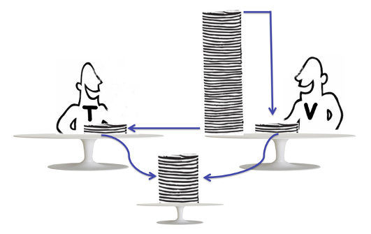

After you create a task dependency graph, you need to submit it to threads for execution. In this chapter, we will show you how to execute a task dependency graph.
To execute a taskflow, you need to create an executor of type tf::Executor. An executor is a thread-safe object that manages a set of worker threads and executes tasks through an efficient work-stealing algorithm. Issuing a call to run a taskflow creates a topology, a data structure to keep track of the execution status of a running graph. tf::Executor takes an unsigned integer to construct with N worker threads. The default value is std::thread::hardware_concurrency.
Taskflow designs a highly efficient work-stealing algorithm to schedule and run tasks in an executor. Work-stealing is a dynamic scheduling algorithm widely used in parallel computing to distribute and balance workload among multiple threads or cores. Specifically, within an executor, each worker maintains its own local queue of tasks. When a worker finishes its own tasks, instead of becoming idle or going sleep, it (thief) tries to steal a task from the queue another worker (victim). The figure below illustrates the idea of work-stealing:

The key advantage of work-stealing lies in its decentralized nature and efficiency. Most of the time, worker threads work on their local queues without contention. Stealing only occurs when a worker becomes idle, minimizing overhead associated with synchronization and task distribution. This decentralized strategy effectively balances the workload, ensuring that idle workers are put to work and that the overall computation progresses efficiently. That being said, the internal scheduling mechanisms in tf::Executor are not trivial, and it's not easy to explain every detail in just a few sentences. If you're interested in learning more about the technical details, please refer to our paper published in 2022 IEEE Transactions on Parallel and Distributed Systems (TPDS):
tf::Executor provides a set of run_* methods, tf::Executor::run, tf::Executor::run_n, and tf::Executor::run_until to run a taskflow for one time, multiple times, or until a given predicate evaluates to true. All methods accept an optional callback to invoke after the execution completes, and return a tf::Future for users to access the execution status. The code below shows several ways to run a taskflow.
Lines 6–8 create a taskflow consisting of three tasks, A, B, and C. Lines 13–14 execute the taskflow once and block until its completion. Line 16 runs the taskflow once and registers a callback that is invoked when the execution finishes. Lines 17–18 execute the taskflow four times and use tf::Executor::wait_for_all to wait for all executions to complete. Line 19 again runs the taskflow four times but invokes a callback at the end of the fourth execution. Finally, line 20 repeatedly runs the taskflow until the specified predicate returns true.
While it is possible to submit the same taskflow to an executor multiple times, these multiple runs will be synchronized to a sequential chain of executions in the order of their submissions. For example, the three submissions below will finish in order, where execution #1 completes before #2, and execution #2 completes before execution #3:
However, there is no deterministic order for different taskflows submitted simultaneously. For example, the three submissions below may finish in an arbitrary order, since the three taskflows are distinct:
A running taskflow must remain alive for the duration of its execution because the executor does not take ownership of the taskflow. It is your responsibility to ensure that a taskflow is not destroyed while it is still running. For example, the code below can result in undefined behavior.
Similarly, you should avoid modifying a taskflow while it is running:
You must always keep a taskflow alive and must not modify it while it is running on an executor.
You can transfer the ownership of a taskflow to an executor and run it without wrangling with the lifetime issue of that taskflow. Each run_* method discussed in the previous section comes with an overload that takes a moved taskflow object.
However, you should avoid moving a running taskflow which can result in undefined behavior.
The correct way to submit a taskflow with moved ownership to an executor is to ensure all previous runs have completed. The executor will automatically release the resources of a moved taskflow right after its execution completes.
Likewise, you cannot move a taskflow that is running on an executor. You must wait until all the previous fires of runs on that taskflow complete before calling move.
Each run variant of tf::Executor returns a tf::Future object that allows you to wait for the associated execution to complete. When tf::Future::wait is called, the caller blocks without making any progress until the underlying state becomes ready. However, this blocking design can lead to potential deadlocks, particularly when multiple taskflows are launched from within the internal workers of the same executor. For example, the following code creates a taskflow of 1,000 tasks, where each task runs another taskflow of 500 tasks in a blocking manner, leading to a potential deadlock problem:
To avoid this deadlock issue, tf::Executor provides a cooperative execution method, tf::Executor::corun, which allows a worker to execute a taskflow cooperatively with other workers within the same executor. Specifically, although the worker is blocking until corun finishes, it is cooperatively blocked and continues to execute the taskflow alongside other tasks in the executor's work-stealing loop. For instance, the following code with tf::Executor::corun is deadlock-free:
Similar to tf::Executor::corun, tf::Executor::corun_until provides a more general mechanism for cooperative execution. It allows the calling worker to run tasks cooperatively with other workers until a specified condition becomes true. This function is especially useful for implementing custom synchronization or polling conditions, where the worker continues making progress by executing available tasks in the executor while periodically checking for the termination condition.
All run_* methods of tf::Executor are thread-safe. You can safely call these methods from multiple threads to execute different taskflows concurrently. For instance, the code below launches ten threads, each executing a different taskflow concurrently on the same executor, and waits for all executions to complete:
Each worker thread in a tf::Executor is assigned a unique integer identifier in the range [0, N), where N is the number of worker threads in the executor. You can query the identifier of the calling thread using tf::Executor::this_worker_id. If the calling thread is not a worker of the executor, the method returns -1. This functionality is particularly useful for establishing a one-to-one mapping between worker threads and application-specific data structures.
You can observe thread activities in an executor when a worker thread participates in executing a task and leaves the execution using tf::ObserverInterface – an interface class that provides a set of methods for you to define what to do when a thread enters and leaves the execution context of a task.
There are three methods you must define in your derived class, tf::ObserverInterface::set_up, tf::ObserverInterface::on_entry, and tf::ObserverInterface::on_exit. The method, tf::ObserverInterface::set_up, is a constructor-like method that will be called by the executor when the observer is constructed. It passes an argument of the number of workers to observer in the executor. You may use it to preallocate or initialize data storage, e.g., an independent vector for each worker. The methods, tf::ObserverInterface::on_entry and tf::ObserverInterface::on_exit, are called by a worker thread before and after the execution context of a task, respectively. Both methods provide immutable access to the underlying worker and the running task using tf::WorkerView and tf::TaskView. You may use them to record timepoints and calculate the elapsed time of a task.
You can associate an executor with one or multiple observers using tf::Executor::make_observer. We use std::shared_ptr to manage the ownership of an observer. The executor loops through each observer and invoke the corresponding methods accordingly.
The above code produces the following output:
It is expected each line of std::cout interleaves with each other as there are four workers participating in task scheduling. However, the ready message always appears before the corresponding task message (e.g., numbers) and then the finished message.
You can change the property of each worker thread from its executor, such as assigning thread-processor affinity before the worker enters the scheduler loop and post-processing additional information after the worker leaves the scheduler loop, by passing an instance derived from tf::WorkerInterface to the executor. The example demonstrates the usage of tf::WorkerInterface to affine a worker to a specific CPU core equal to its id on a Linux platform:
When running the program, we see the following one possible output:
When you create an executor, it spawns a set of worker threads to run tasks using a work-stealing scheduling algorithm. The execution logic of the scheduler and its interaction with each spawned worker via tf::WorkerInterface is given below: